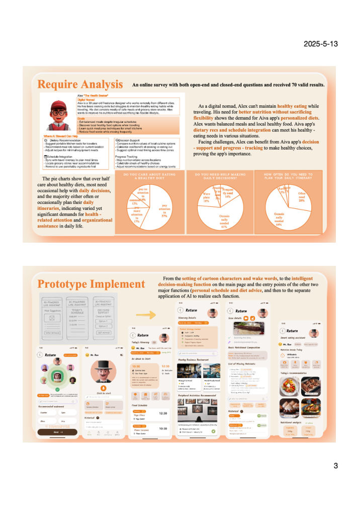

Challenge
A survey of 70 people pointed to scheduling, health and decision-making as recurring needs, usually spread across separate apps.
Interaction design · Team concept, individual design · 2025
A personal-assistant app concept that brings scheduling, nutrition and everyday decisions into one guided interface.
A survey of 70 people pointed to scheduling, health and decision-making as recurring needs, usually spread across separate apps.
Turned the team concept into Figma screen flows, designed the poster framework and documented six rounds of interface revision.
Clearer onboarding led by a butler character, separate personalisation steps, concrete meal suggestions instead of nutrient lists, and one duplicate page removed.

User needs, core features and assistant experience.
Interface development and iterations.
Credits: The AIVA concept and poster were created with my team. I edited the walkthrough video myself in 剪映 (CapCut); its stock clips come from the app’s built-in media library. Food and venue photos inside the mock-ups are third-party placeholder images, used for non-commercial coursework.